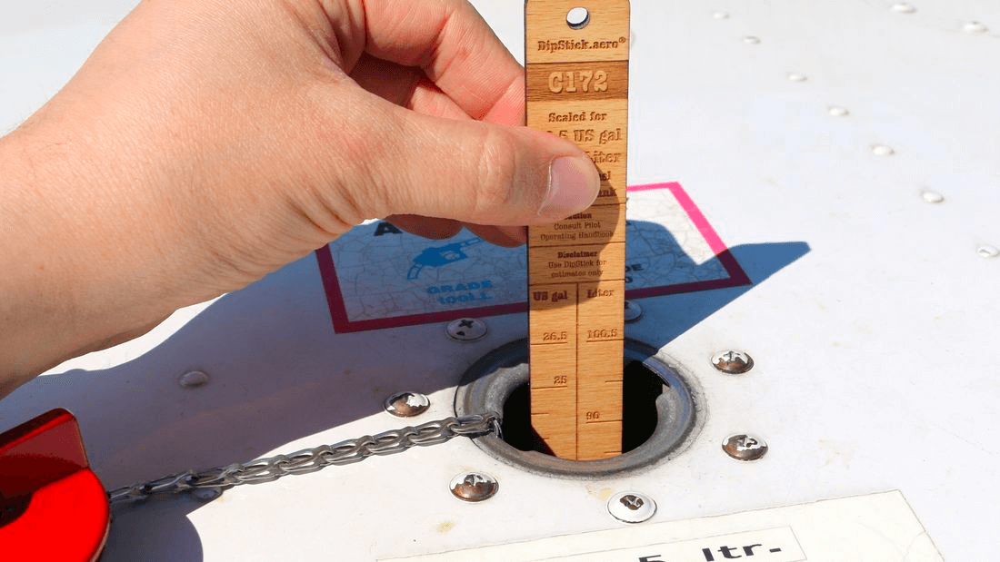

Error culture as done by aviation
Adrian Föder, @afoeder


Errors mostly remain without consequences
However lead to an accident under suitable circumstances.

- Accidents always are the result of errors
- but are never the result of just one single error
Reverse
Why does a single mistake not necessarily lead to an accident?

Introducing the Swiss Cheese Model
coined by James T. Reason


Human Factor
Goal: avoidance of human error
Errors can result from "wrong decisions"
We live with mistakes and risks
consciously or unconsciously
We live with Hazardous Attitudes
- Anti-authority (“Don’t tell me”)
- Impulsiveness (“Do it quickly”)
- Invulnerability (“It won’t happen to me”)
- Macho (“I can do it.”)
- Resignation (“What’s the use?”)
»To err is human«
*Disclaimer: this doesn't mean they're always OK


Cognitive dissonance
So how to really avoid mistakes?
- Accidents always are the result of errors
- but are never the result of just one single error
International Nuclear Event Scale (INES)

"Mistakes make you wise"

Mistakes must be processed
- …with us for ourselves (mostly inherently given)
- to tighten the "cheese hole": with the organization to give it the opportunity to learn
No "Pu.Mist. culture"
Punishing mistakes and thus encouraging the covering up of mistakes prevents an active dealing with the causes
Goal: strengthen the safety net
For ourselves and for the system.
For everybody.
BFU
German Federal Bureau of Aircraft Accident Investigation
» The fundamental purpose of the BFU is: To improve aviation safety by determining the causes of accidents and serious incidents and making safety recommendations intended to prevent recurrence. It is not to apportion blame or liability.«
Investigation analysis model
The Australian Transport Safety Bureau (ATSB) developed a comprehensive investigation analysis framework


Organizational influences
- Have a significant influence on the occurrence of accidents
- Are only evident in combination with local or triggering factors.
- Already present well before the occurrence of a recognizable accident sequence!
Anecdote

</ANECDOTE>
Cause search
Don't ask "Who was at fault?"
but
- What exactly has been done wrong?
- Why has it been done wrong?
- What circumstances favored the error?
i.e. Team/Orga/Tech
Learning from making mistakes
- Abandon PuMist culture
- Turning to constructive error management
You as the employees know the weak points.
You can gather them together.
Opportunities for improvement
- What problems do you see in the company?
- What can/should the company do to improve?
In last consequence
you are asked yourselves!
Threat and error management"TEM"


TEM can be applied at any time
- When pair programming or "pair troubleshooting"
- "In front of the water cooler"